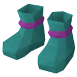
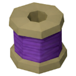

Sage Boots
Equipment · Boots · Magic · Uncommon
| Property | Value |
|---|---|
| Needs Sorcery level | 30 |
| Bonuses | Defence +2 · Magic attack +1 |
| Value | 175 coins |
| Sells for | 21.88 coins each |
| High Alchemy | 30 coins |
| Market price | 2,100 coins (a guide for trading; shops and High Alchemy pay far less) |
| Stacks | No |
Made by
| Recipe | Level | Needs |
|---|---|---|
| 🧵 Weave Sage Boots | 💎 Artifice 47 |  Amethyst Thread ×2 |